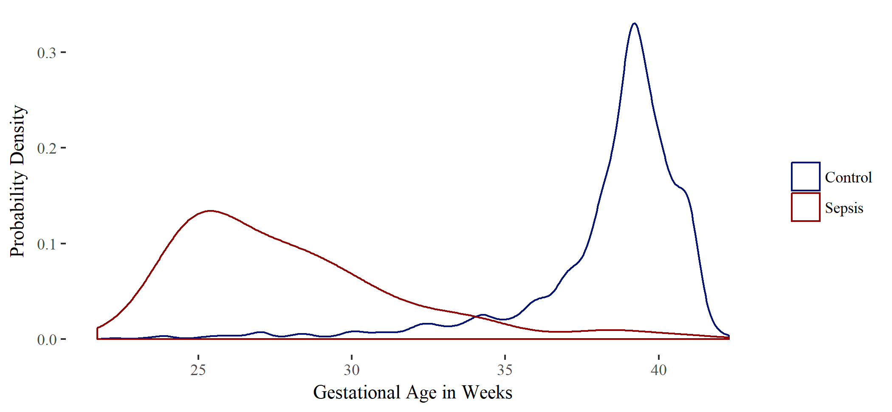

Neonatal sepsis is a leading cause of mortality and morbidity in the neonatal population. To better understand the occurrence and treatment of neonatal sepsis at the University of Utah Hospital, retrospective data was collected from a 12 year period from 2006 to 2018 for all neonates billed for neonatal sepsis and present at the hospital between 0 and 28 days of life. The results of this investigation is two published abstracts (Wagstaff, et al., 2018; Wagstaff et al., 2019a) with poster presentations at the annual meetings of the American College of Clinical Pharmacology (ACCP) in 2018 and 2019, and a journal article in Frontiers of Pharmacology (Wagstaff et al., 2019b).
Initially, this study was focused on late onset sepsis (sepsis within 3-28 days of birth). Elena Enioutina, MD, PhD has proposed that the number of myeloid derived suppressor cells found in cord blood may correlate with late onset sepsis. With that purpose in mind, data was collected to support future prospective studies. Specifically, she was interested in determining a cutoff for gestational age that will increase the statistical power of the study and keep the number of patients included in the study to a minimum.
After cleaning the data, we tested gestational age as a predictor of late-onset sepsis. Based on a logistic regression model, gestational age is a good predictor of late onset sepsis in terms of sensitivity and specificity (Figure 1 corroborates this point). Since the likelihood of sepsis is so skewed (about 5:1000 sepsis:normal) the precision of the predictor is low. This means that if the cutoff age is 33 weeks, even though 90% of newborns with late-onset sepsis would be captured, only 4% of the newborns less than 33 weeks would be positive for late-onset sepsis.
We characterized the treatment, demographics, and causative agents of late onset sepsis within our patient group in an abstract and poster at the ACCP 2018 meeting (Wagstaff et al., 2018). After further analysis and data collection, we presented a second abstract and poster on the subject of empiric treatment of early onset neonatal sepsis at the ACCP 2019 meeting (Wagstaff et al., 2019a). Finally, we refined our findings into a journal article published in Frontiers in Pharmacology (Wagstaff et al., 2019b).
Most neonates treated for sepsis did not have a corresponding positive blood culture result. Only 2.3% of early onset sepsis patients and 20% of late onset patients had positive culture results (Wagstaff et al., 2019b). Empiric treatment of neonatal sepsis before blood culture results is standard practice. In cases where cultures remained negative, treatment continued long after blood cultures would be expected to turn positive. The mean treatment length in culture negative cases was 6.1 and 7.8 days per course for early and late onset sepsis respectively (Wagstaff et al., 2019b). Over time, the use of gentamicin to treat neonatal sepsis was increasingly replaced or augmented by cefotaxime administration. This observation was concerning since there is evidence that cefotaxime may cause increased mortality when compared to gentamicin (Clark et al., 2006). Using multiple logistic regression, we found a similar increase in risk of mortality when neonates were exposed to cefotaxime. The risk was statistically significant even when gestational age, birth weight, hospital admission date-time, blood culture confirmation of sepsis, risk of mortality, and severity of illness were added to the model as potential confounding variables (adjusted odds ratio 2.8, p = 0.02; Figure 2; Wagstaff et al., 2019a; Wagstaff et al., 2019b).
Clark, R.H., Bloom, B.T., Spitzer, A.R., & Gerstmann, D.R. (2006). Empiric use of ampicillin and cefotaxime, compared with ampicillin and gentamicin, for neonates at risk for sepsis is associated with an increased risk of neonatal death. Pediatrics, 117(1), 67–74. https://doi.org/10.1542/peds.2005-0179
Wagstaff, J.S., Eason R., Newman M., Sherwin, C.M., & Enioutina, E.Y. (2018). Characterization and treatments of neonatal late-onset sepsis: a retrospective analysis of the Univ of Utah Hosp cases [Abstract 114]. Clinical Pharmacology in Drug Development, 7(S1), 89–90. https://doi.org/10.1002/cpdd.610 (poster)
Wagstaff, J.S., Newman, M., & Enioutina, E.Y. (2019a). Empiric treatment of neonatal early-onset sepsis: a retrospective analysis of the University of Utah Hospital cases [Abstract 43]. Clinical Pharmacology in Drug Development, 8(S1), 30. https://doi.org/10.1002/cpdd.724 (poster)
Wagstaff, J.S., Durrant, R.J., Newman, M.G., Eason, R., Ward, R.M., Sherwin, C.M.T., & Enioutina, E.Y. (2019b). Antibiotic treatment of suspected and confirmed neonatal sepsis within 28 days of birth: a retrospective analysis. Frontiers in Pharmacology, 10, 1191. https://doi.org/10.3389/fphar.2019.01191
{kind=link}
{kind=link}